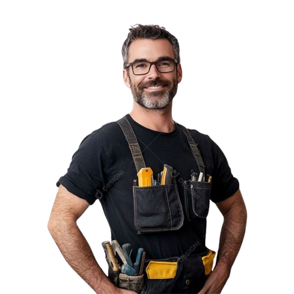

Seu Diário de Transformação no Modo Caverna
Este é o seu espaço pessoal para acompanhar e registrar cada passo da sua jornada de 30 dias. A reflexão diária é uma ferramenta poderosa para consolidar aprendizados, superar desafios e celebrar suas conquistas.

"Dia 5 e você ainda não fugiu? Orgulho define."
Como Usar Seu Diário
Encorajamos você a usar este diário (ou seu próprio caderno/aplicativo de notas) para registrar suas observações e sentimentos. Algumas ideias do que registrar:
- Como você se sentiu ao acordar?
- Quais desafios você enfrentou hoje (distrações, vontade de usar redes sociais)? Como os superou?
- Quais foram suas principais conquistas do dia? (Ex: li as 10 páginas, meditei, avancei no projeto X).
- O que você aprendeu sobre si mesmo(a) hoje?
- Qual a sua intenção para amanhã?
Seja honesta e detalhista. Este é um diálogo com você mesma.
Progresso do Desafio: 30 Dias
Clique no dia para registrar suas anotações e acompanhar seu progresso.
O final está se aproximando. Prepare-se para a conclusão do seu Desafio Modo Caverna!